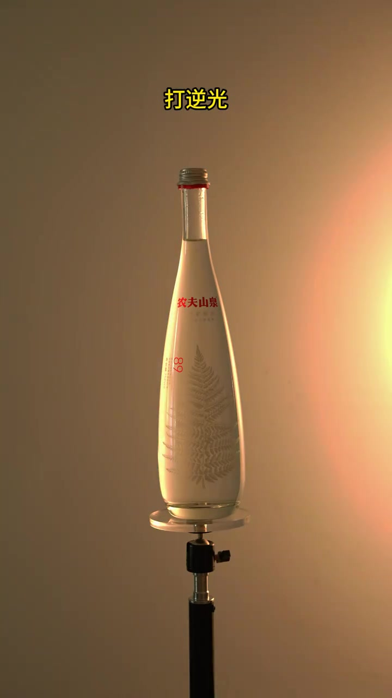
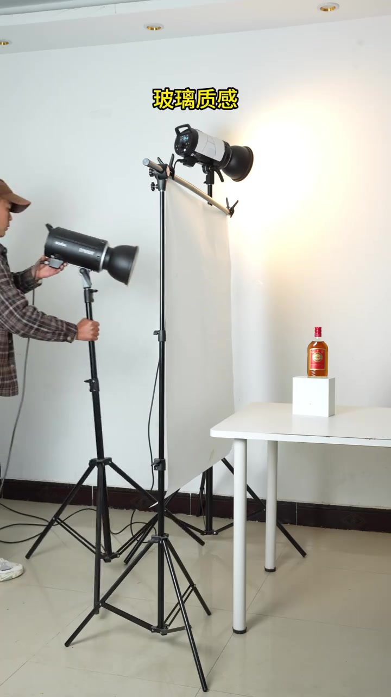
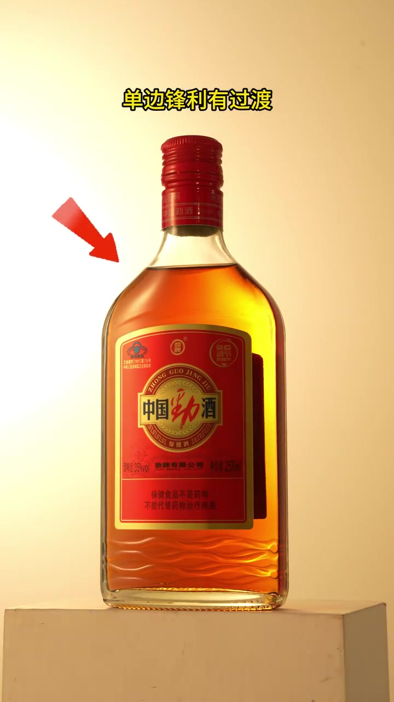
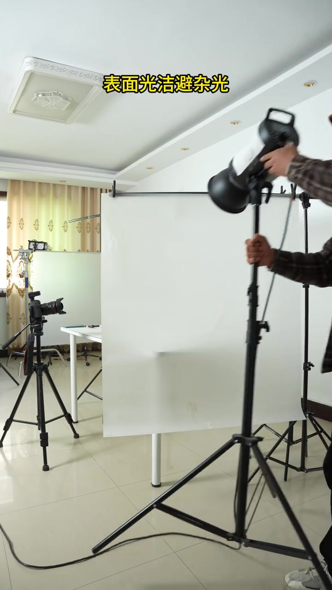
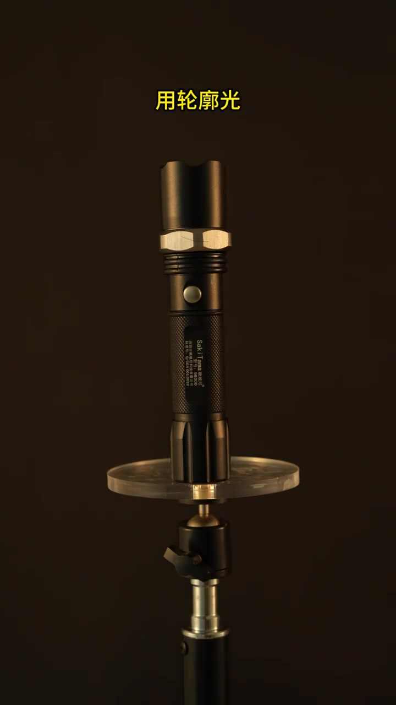
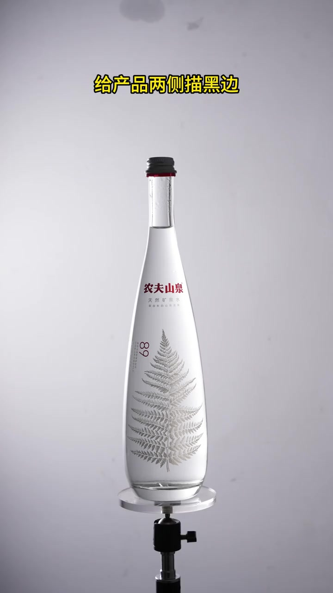
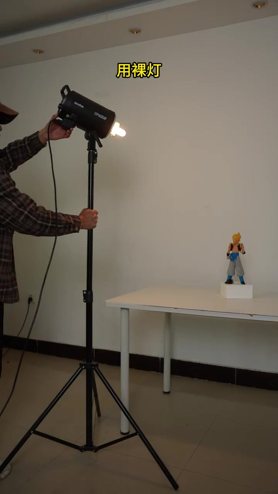
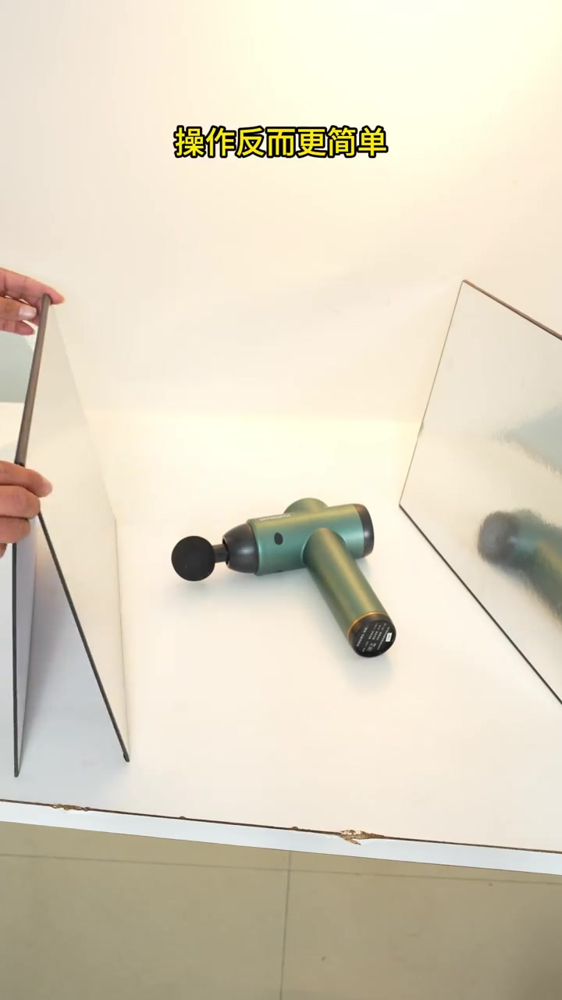

产品不通透时，先打逆光
开场直接对着一瓶农夫山泉：若主体看起来「不通透」，作者的第一招是打逆光——让光线从后方穿过瓶身与液体，把层次顶出来。画面叠字「打逆光」，瓶身被暖色背光点亮。
「不通透，打逆光，表现层次。」
说明：Whisper 分段保留原识别结果；下文叙述结合画面字幕校正（如「刘酸纸」→硫酸纸、「轮扩光」→轮廓光、「添目光/目光」→补光、「太平眉层次」→太平没层次）。

[00:01] 逆光穿过瓶身，液体与瓶壁开始显出通透层次。
Backlight passing through the bottle starts showing translucent layers in the liquid and walls.
双灯切高光，玻璃才「锋利」
下一组转到酒类玻璃瓶现场：左侧有人在调闪光灯，后方有第二盏灯透过白透射布，字幕写「玻璃质感」。口播要点是用双灯「切高光」——高光边缘要单边锋利，同时又留一点过渡，避免死硬白边。
「用双灯，玻璃质感，切高光；单边锋利，有过渡。」

[00:05] 现场双灯布置：一盏主控高光，一盏从后方透射布补层次。
A live two-light setup: one key controlling highlights, one from behind through fabric adding depth.

[00:08] 成片示意「单边锋利有过渡」：瓶肩高光窄而干净，边缘仍有柔和过渡。
The final shows “sharp on one edge with a transition”: the bottle shoulder's highlight is narrow and clean, with soft falloff at the edge.
反光太强就上硫酸纸，并关杂光
玻璃与金属面容易乱反光。作者给出工具解法：反光强时用硫酸纸柔化/遮挡，目标是「表面光洁」，同时关掉或挡住杂光，别让环境反光污染产品。
画面字幕：「表面光洁避免杂光」

[00:12] 布光现场强调表面干净、少杂光，为高光形状做准备。
The lighting setup stresses a clean surface with little stray light, preparing the highlight shape.
黑中有黑：轮廓光 + 黑卡描边
深色主体容易「糊进背景」。作者用轮廓光（两边各一盏、窄高光）把边缘「发挥」出来；再用黑卡纸给产品两侧描黑边，让轮廓更利落。黑色手电筒与农夫山泉瓶分别示范这两种手法。
「黑中有黑，用轮廓光，两边各一个；用黑卡纸，给产品两侧描黑边。」

[00:16] 轮廓光把深色手电筒从暗背景里「抠」出来。
Rim light “cuts” the dark flashlight out of the dark background.

[00:21] 黑卡纸辅助后，透明瓶两侧出现更清晰的黑边轮廓。
With a black card behind it, the clear bottle gains cleaner black-edge contours.
光影太平时，换成裸灯
当光影太平、没层次时，作者改用裸灯（无柔光箱）直接打在手办上：明暗对比立刻变强，冲击感上来。画面可见 Godox 灯头裸露、小手办落在白台。
「光影太平没层次，用裸灯打光影；明暗强烈，有冲击力。」

[00:26] 裸灯近距离打光，阴影更硬、对比更强。
A bare light up close: harder shadows, stronger contrast.
单灯也够：补光就用反光板
收尾回到「操作反而更简单」：单灯拍摄时要不要补光？作者的答案是——补光就用反光板，大部分产品都能拍。画面中绿色筋膜枪两侧夹着反光板，有人在微调板位。
「单灯拍，用补光吗？操作反而更简单；补光就用反光板，大部分产品都能拍。」

[00:32] 单灯 + 两侧反光板：少器材也能控亮暗与反光。
One light + two side reflectors: controlling brightness and bounce with minimal gear.